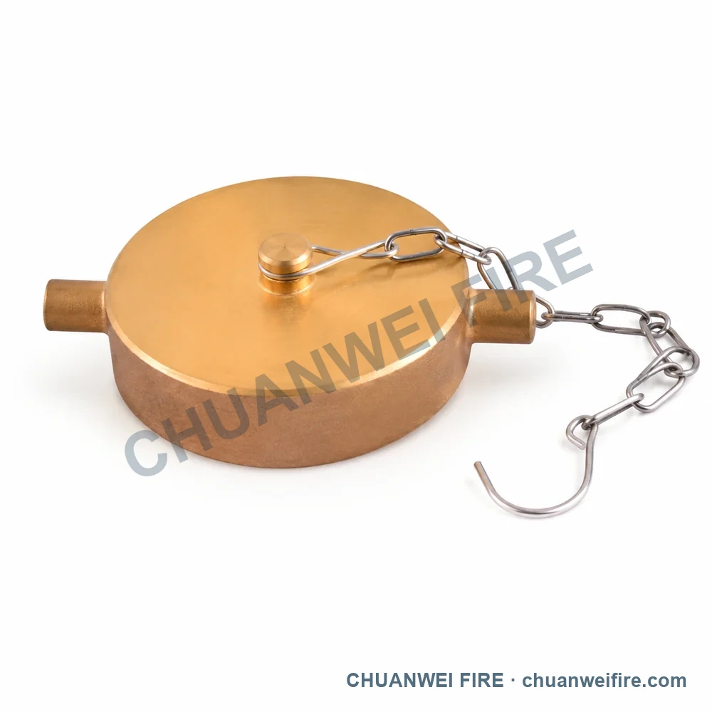
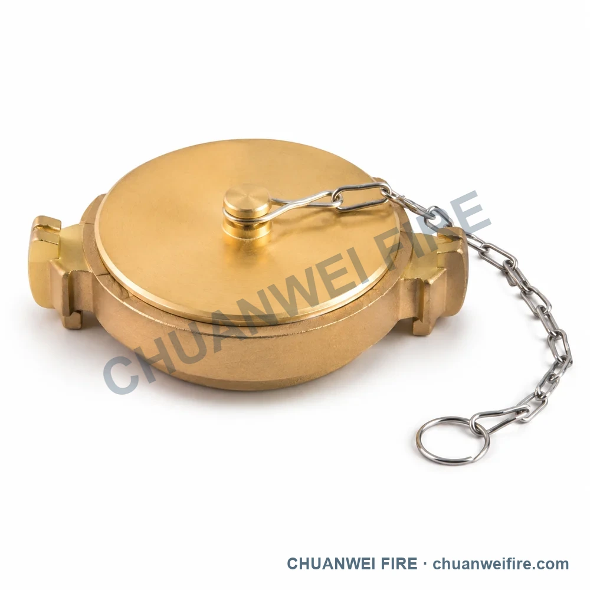
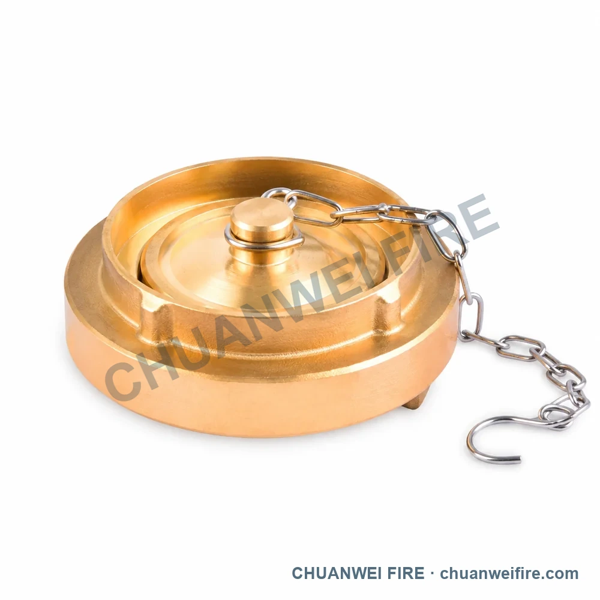
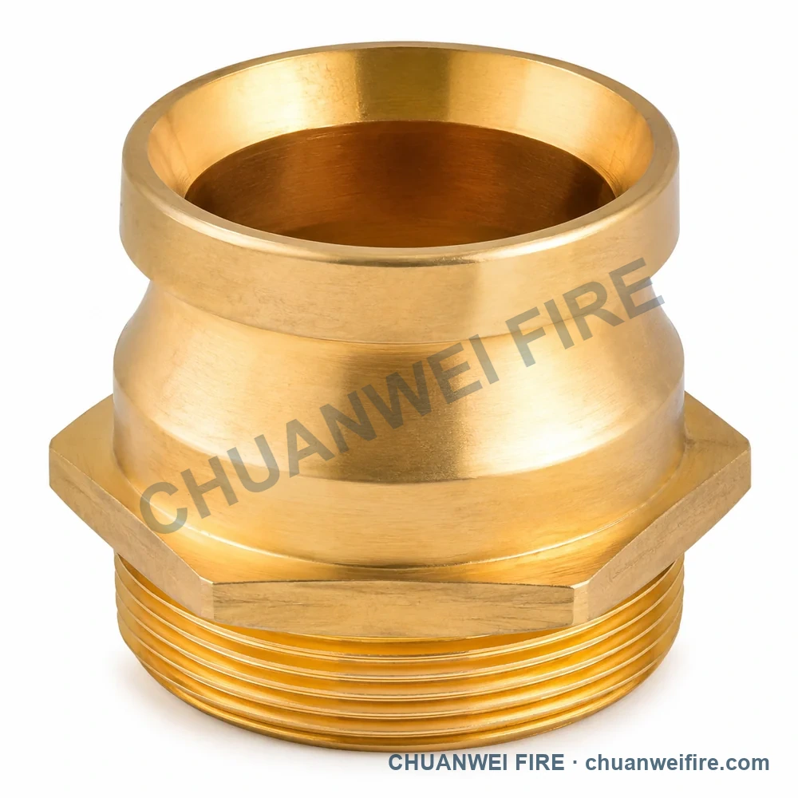

Brass-Finish Waist-Grooved Chained Blank Cap
Source connection or dimension data: inlet 1.5 in BS336
5 directly selectable configurations from the supplied catalog
Use the configuration images to identify the required product, then confirm connection, material and performance data with the quotation.
The final specification and product arrangement are confirmed in the quotation and approved drawing.
Source connection or dimension data: inlet 1.5 in BS336

Source connection or dimension data: inlet 1.5 in NH · inlet 2.5 in NH

Source connection or dimension data: inlet 2.5 in JIS

Source connection or dimension data: inlet 2.5 in

Source connection or dimension data: inlet 1.5 in BSP; outlet 1.5 in BS336 · inlet 2.5 in BSP; outlet 2.5 in BS336
The final specification and product arrangement are confirmed in the quotation and approved drawing.
Configuration images
Open each image to compare the general arrangement. Confirm small details, threads and cast markings against an original photo, mating sample or approved drawing.
Data scope
Visible connection and dimension values were transcribed from the catalog to support configuration selection. Final order specifications are confirmed in the quotation.
Available configurations
Each row shows a configuration and the connection or dimension entries visible in the supplied catalog.
| Configuration | Source connection or dimension data |
|---|---|
| Brass-Finish Waist-Grooved Chained Blank Cap | inlet 1.5 in BS336 |
| Brass-Finish Double-Lug Chained Blank Cap | inlet 1.5 in NH · inlet 2.5 in NH |
| Brass-Finish Twin-Claw Fine-Chain Blank Cap | inlet 2.5 in JIS |
| Brass-Finish Disc-Type Chained Blank Cap | inlet 2.5 in |
| Brass-Finish Male-Threaded Plug-In Coupling | inlet 1.5 in BSP; outlet 1.5 in BS336 · inlet 2.5 in BSP; outlet 2.5 in BS336 |
Quotation confirmation
Send the configuration image, size, connection, material, working pressure, quantity and destination. The quotation and approved drawing lock the final supply specification.
Include the configuration, connection, material, pressure, quantity and destination country.